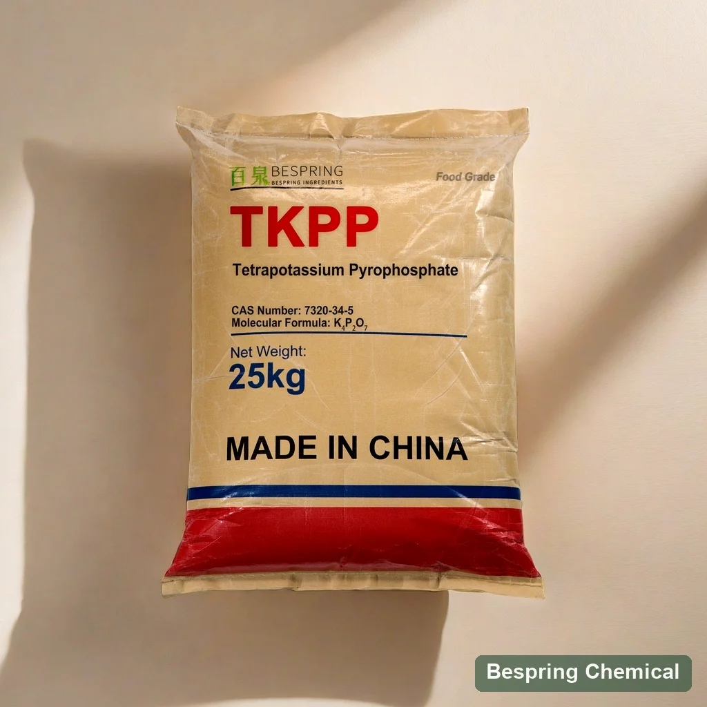
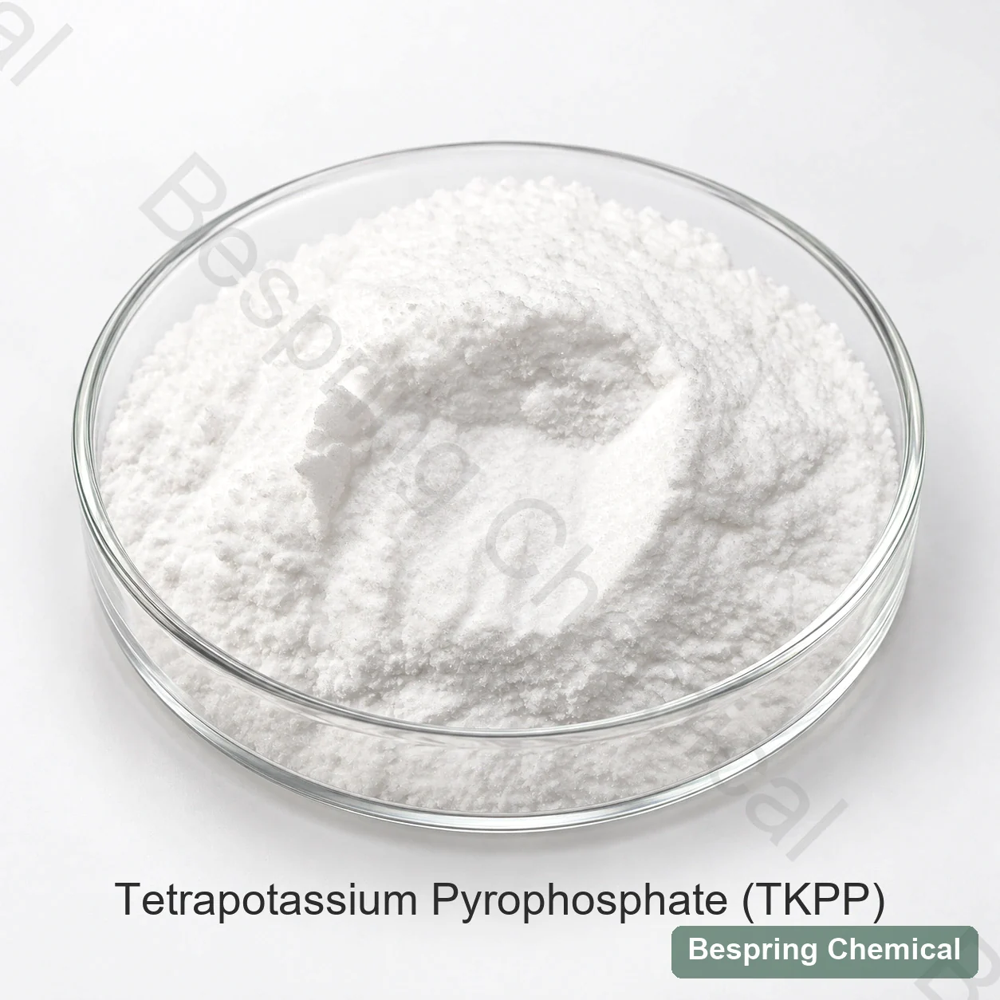
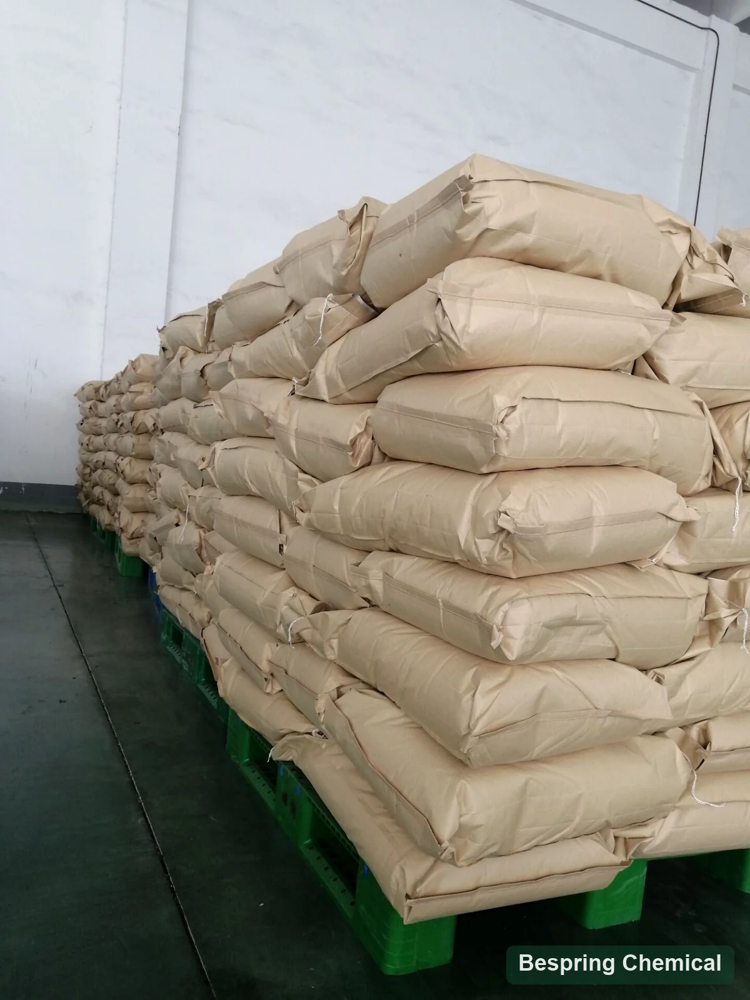

Aporte de sodio
TKPP no aporta sodio desde esta sal; calcule todas las fuentes del alimento terminado.
Ingrediente alimentario · Evaluación técnica B2B
Fosfato potásico soluble y alcalino para evaluar en formulaciones donde importan el secuestro y el control del proceso.
Indique aplicación, cantidad, destino y documentos requeridos para evaluar una oferta concreta.

Identidad del producto
El TKPP es la sal potásica del ácido pirofosfórico: K₄P₂O₇, CAS 7320-34-5 e INS 450(v). Es higroscópico, soluble y alcalino.
Selección técnica
Compare el objetivo de sodio, el aporte de potasio, la alcalinidad, la disolución y la función pirofosfato. Sustituir TSPP requiere una prueba completa.
TKPP no aporta sodio desde esta sal; calcule todas las fuentes del alimento terminado.
El K₄P₂O₇ anhidro puro contiene teóricamente cerca del 47,4 % de potasio; calcule con la composición certificada del grado.
JECFA indica pH 10,0–10,7 en solución al 1 %; controle también color, textura y sabor final.
Mida claridad y sedimento con el agua, las sales y el orden de adición reales.
Función tecnológica
El pirofosfato interactúa con iones y puede modificar hidratación proteica o emulsión. Mida pH y respuesta funcional sin asumir un resultado universal.
Compruebe dureza del agua, carga de calcio y pH final.
Compare hidratación proteica, pérdidas de cocción y estabilidad.
Aplicaciones
Se evalúa en salmueras cárnicas, queso procesado, productos marinos y mezclas de fosfatos cuando la normativa lo permite.
Registre absorción, pérdida de cocción, purga y textura.
Controle calcio, caseína, calentamiento, cizalla y enfriamiento.
Compare rendimiento tras drenaje equivalente y pérdidas de descongelación.
Verifique compatibilidad, solubilidad y estabilidad de la mezcla.
Datos de referencia
La tabla presenta límites comerciales de referencia. Las diferencias frente a JECFA y la UE indicadas a continuación deben resolverse en la especificación y el COA del grado destinado a cada mercado.
| Parámetro de ensayo | Unidad | Límite suministrado | Nota para homologación |
|---|---|---|---|
| Contenido de K₄P₂O₇ | % | ≥ 95,0 | Confirme el ensayo en base calcinada |
| Materia insoluble en agua | % | ≤ 0,2 | Coincide con el máximo JECFA |
| Arsénico (As) | mg/kg | ≤ 3 | Coincide con JECFA; el límite de la UE es menor |
| Metales pesados (como Pb) | mg/kg | ≤ 10 | No equivale al ensayo de plomo |
| Plomo (Pb) | mg/kg | ≤ 2 | Más estricto que JECFA (4 mg/kg); la UE fija un límite menor |
| Fluoruro (F) | mg/kg | ≤ 30 | No coincide con el límite JECFA/UE de 10 mg/kg |
| «Pérdida por ignición a 110 °C» | % | ≤ 0,5 | La etiqueta y el método de origen son ambiguos; JECFA utiliza dos etapas de calentamiento |
| Cadmio (Cd) | mg/kg | ≤ 1 | Parámetro comercial suministrado |
| Mercurio (Hg) | mg/kg | ≤ 1 | Parámetro comercial suministrado |
| Aspecto | — | Polvo blanco o gránulos | JECFA: cristales o polvo cristalino/granular |
Comparación de fosfatos
Cambian el catión, la cadena de fosfato, la alcalinidad y el comportamiento de proceso. Compare composición y función, no solo siglas.
Pirofosfato potásico; compare su aporte de potasio y alcalinidad.
Pirofosfato sódico; revise el aporte de sodio y la función equivalente.
Tripolifosfato potásico; su cadena fosfato e identidad son diferentes.
Documentación
Solicite especificación vigente, ficha técnica, ficha de seguridad y COA; verifique alcance y vigencia de cualquier certificado.
Solicite especificación, ficha técnica, ficha de seguridad y COA.
Compruebe certificados aplicables al producto y a la planta ofrecidos.
Verifique alcance, emisor y vigencia de los certificados.
Almacenamiento
Mantenga envases cerrados y secos. La guía de referencia indica almacenamiento fresco y temperatura no superior a 30 °C.
Fotografías de referencia
La muestra ilustra apariencia. La fotografía de sacos sin etiqueta legible no demuestra identidad de producto ni lote.


Prueba comparativa
Fije una referencia y mida disolución, pH, sodio y potasio calculados, rendimiento, textura, sabor y estabilidad.
Registre fosfato actual, minerales, pH y pérdidas del proceso.
Anote temperatura, concentración, agitación y tiempo de disolución.
Mantenga constantes materias primas, sal, agua y proceso.
Incluya rendimiento, sabor, textura, estabilidad y etiquetado.
Consultas del comprador
La sustitución debe aprobarse por composición, normativa y resultado medido.
TKPP aporta potasio en lugar del sodio de TSPP; compare también pH, disolución y rendimiento.
Sí. Son dos nombres de K₄P₂O₇, CAS 7320-34-5 e INS 450(v).
No automáticamente. Calcule todas las fuentes de sodio y verifique los criterios legales del alimento terminado.
Defina temperatura, dureza del agua, concentración, agitación y orden de adición; registre claridad y pH.
No tal como está redactada: el fluoruro permitido es 30 mg/kg frente a 10 mg/kg en las referencias citadas; también difieren límites de la UE.
Aplicación, objetivos de sodio y potasio, especificación, cantidad, envase, destino y documentos.
Consulta de suministro
Indique la aplicación, el grado, la cantidad, el país de destino y los documentos que necesita. Confirmaremos una oferta concreta.